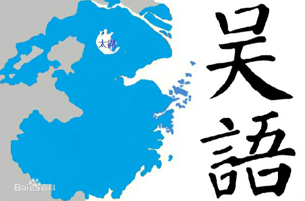
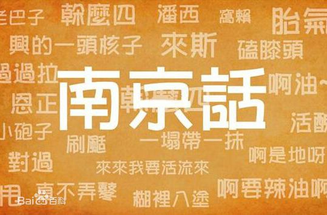
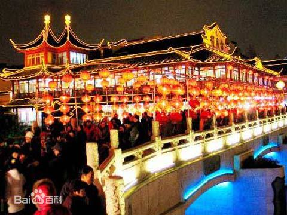

-

吴语，又称江东话、江南话、吴越语。周朝至今有三千多年悠久历史，底蕴深厚。在中国分布于今浙江、江苏南部、上海、安徽南部、江西东北部、福建北一角，使用人口9000多万。吴语是中国七大方言之一，有国际语言代码。 从历史、文风、语言特性分析，吴语近中古雅言，继承中古汉语的整齐八声调和三十六字母框架体系。现代吴语比官话具有更多古音因素，语音与《切韵》《广韵》等古代韵书高度吻合。
-

南京话（Nankinese），又称南京官话，南京官话特指曾作为中国官方语言的以南京语音为标准的国音。现代南京话主要通行于南京市主城六区、浦口区、六合区、江宁区、溧水区北部，句容市全境，仪征市西乡，滁州市区、来安县、全椒县，马鞍山大部分和芜湖市小部分，使用人数约1600万人。
-

秦淮灯会又称金陵灯会、夫子庙灯会，是流传于南京地区的民俗文化活动，主要集中在每年春节至元宵节期间举行，每年持续50多天，是首批国家级非物质文化遗产，有“天下第一灯会”和“秦淮灯彩甲天下”的美誉，是中国唯一一个集灯展、灯会和灯市为一体的大型综合型灯会，也是中国持续时间最长、参与人数最多、规模最大的民俗灯会。